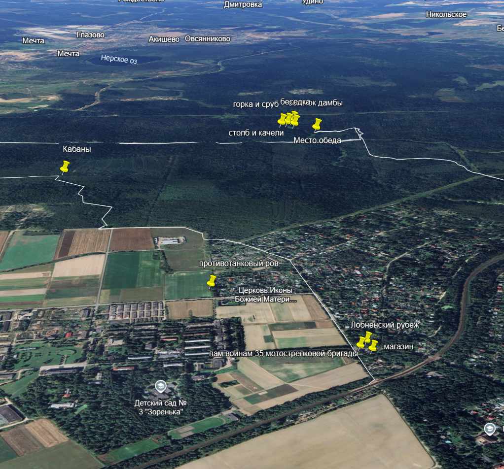

Это не просто путь от Луговой до Некрасовской — это переход в иной мир. За шумом станции — тишина соснового бора, аромат смолы и прохлада леса. Дорога ведёт сквозь «храм» из сосен, где свет играет по-разному: утром — золотая дымка, днём — солнечные зайчики, вечером — тёплое сияние. Мимо старых дач — к озеру-зеркалу, отражающему небо и хвою. Можно подкормить кабанчиков (морковь, яблоки, картофель), но осторожно — это дикая природа. Остановитесь. Прислушайтесь. Этот маршрут — для души.
